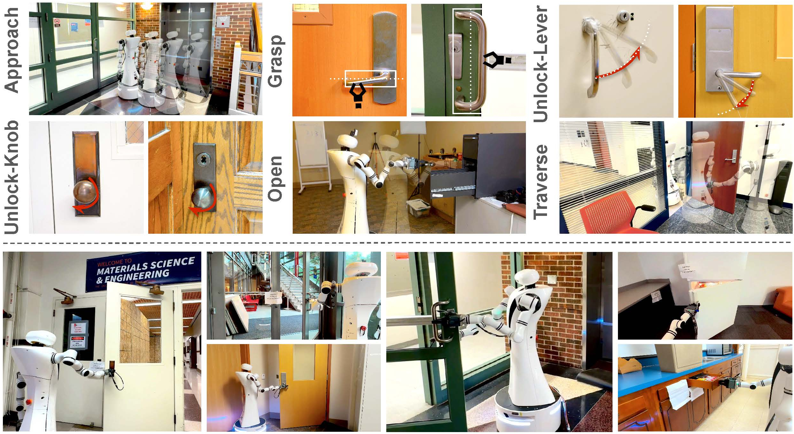

Visual appearance and configurations of our bimanual mobile robot.
Proposed DoorBot, a haptic-aware closed-loop hierarchical control framework that enables robots to explore and open different unseen doors in the wild. We test our system on 20 unseen doors across different buildings, featuring diverse appearances and mechanical types. Our framework achieves a 90% success rate, demonstrating its ability to generalize and robustly handle varied door-opening tasks.
Visual appearance and configurations of our bimanual mobile robot.
System Architecture of DoorBot.
We propose a hierarchical closed-loop controller to help a mobile robot automatically open various doors and walk through them in open environments. Our method can robustly generalize to different handles in the wild.
We design six motion primitives based on the key steps of opening doors and implement them through low-level controllers. This reduces the dimensionality of the action space and avoids reliance on extensive human expert data.
GUM refines the model-based grasp pose prior for the grasp primitive, and simultaneously predicts the motion trajectory for unlocking. It takes RGB and mask images of the handle as input and outputs the adjusted grasp offset (dx, dy) and the unlock axis direction (R). The model is trained on a combination of internet data and real-world data. This allows it to generalize effectively to unseen scenarios.
Examples of how GUM fixes bad grasp pose during our field test.
Haptic feedback in 3 motion primitives. For unlock-lever and unlock-knob, the current threshold for the elbow joint tells the robot when to stop. For open the increase/decrease of current feedback on the elbow joint shows the push-/pull-type of the door.
With multi-modal feedback, our system can open the cabinet with an unknown unlocking direction via explore-and-adapt.
Field test setting. We experimented with 20 environments on the university campus. These scenes in the wild contain various door appearances, handle types, physical properties, and visual distractions like illumination. None of these scenes have been seen in our training dataset.
| Method | Type | Avg | ||||
|---|---|---|---|---|---|---|
| High-Level | Low-Level | Lever | Knob | Crossbar | Cabinet | |
| VLM | VLM | 7/25 | 13/25 | 7/25 | 23/25 | 50% |
| Ours | VLM | 7/25 | 19/25 | 8/25 | 23/25 | 57% |
| VLM | Ours | 22/25 | 23/25 | 16/25 | 25/25 | 86% |
| Ours | Ours | 23/25 | 23/25 | 19/25 | 25/25 | 90% |
Our method consistently outperforms other combinations, showing an average success rate improvement from 50% to 90% across all manipulation tasks. None of the doors nor the handles are seen in the training set, proving our model's generalizability across different situations.
| Method | door1 | door2 | door3 | door4 | door5 | Avg |
|---|---|---|---|---|---|---|
| w/o GUM | 0/5 | 2/5 | 3/5 | 0/5 | 0/5 | 20% |
| GUM* | 4/5 | 5/5 | 5/5 | 5/5 | 5/5 | 92% |
| GUM | 5/5 | 5/5 | 5/5 | 5/5 | 5/5 | 100% |
| Method | door1 | door2 | door3 | door4 | door5 | Avg |
|---|---|---|---|---|---|---|
| Open-Loop | 3/5 | 1/5 | 2/5 | 1/5 | 3/5 | 40% |
| Closed-Loop | 5/5 | 5/5 | 5/5 | 5/5 | 5/5 | 100% |
| Method | Grasp | Unlock-L | Unlock-K | Open | Push / Pull |
|---|---|---|---|---|---|
| CLIP | 42.67% | 33.33% | 38.81% | 15.79% | 15.00% |
| Gemini | 29.63% | 93.75% | 86.36% | 88.88% | 65.00% |
| Haptics | 100% | 100% | 100% | 100% | 100% |